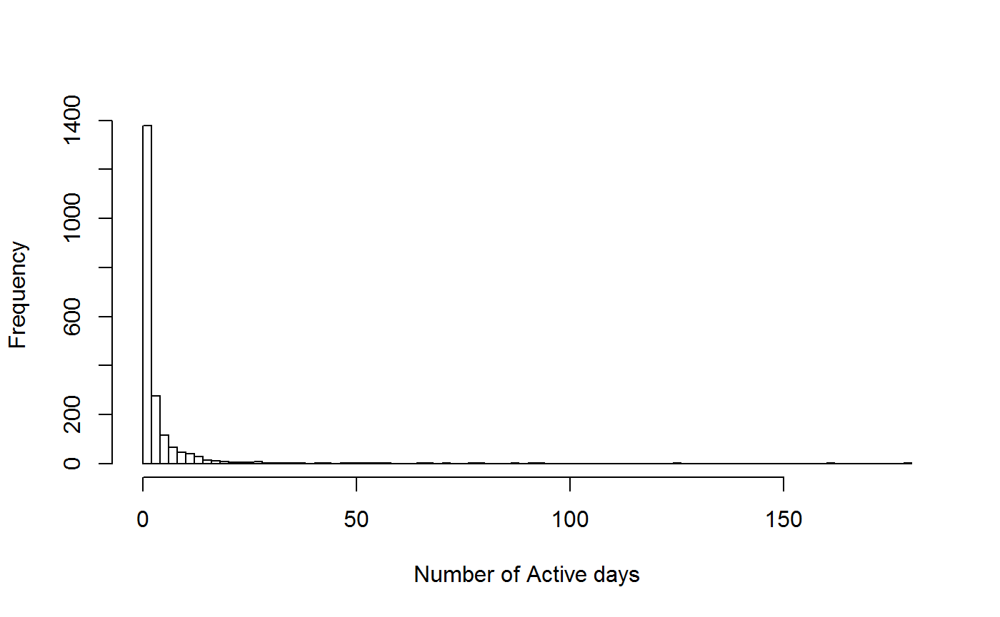
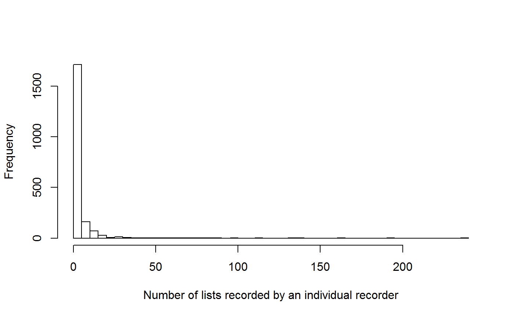
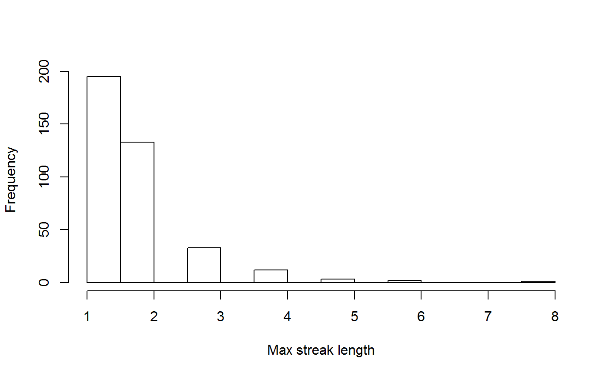
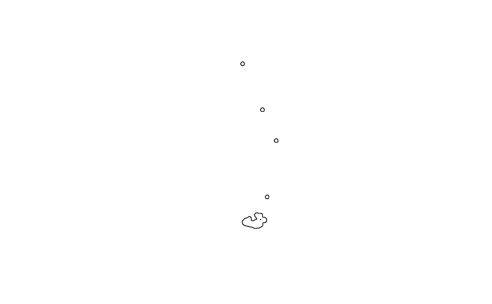
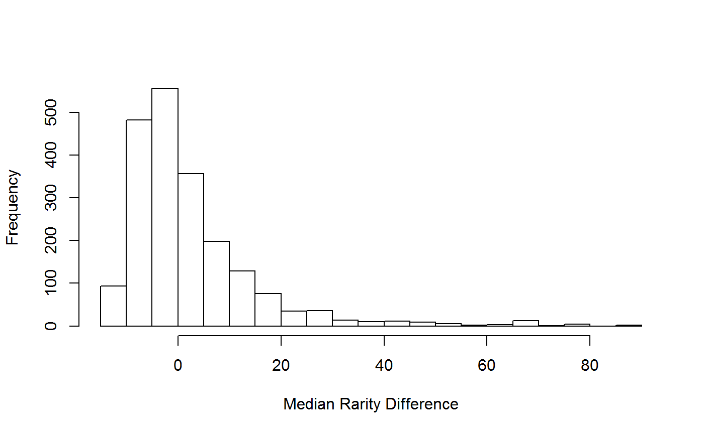
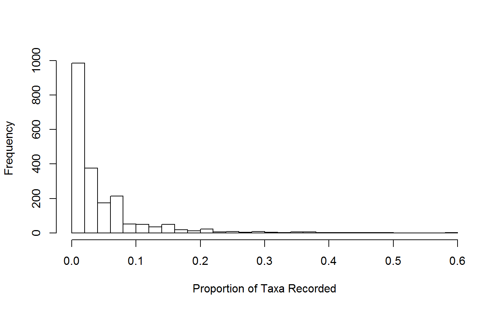
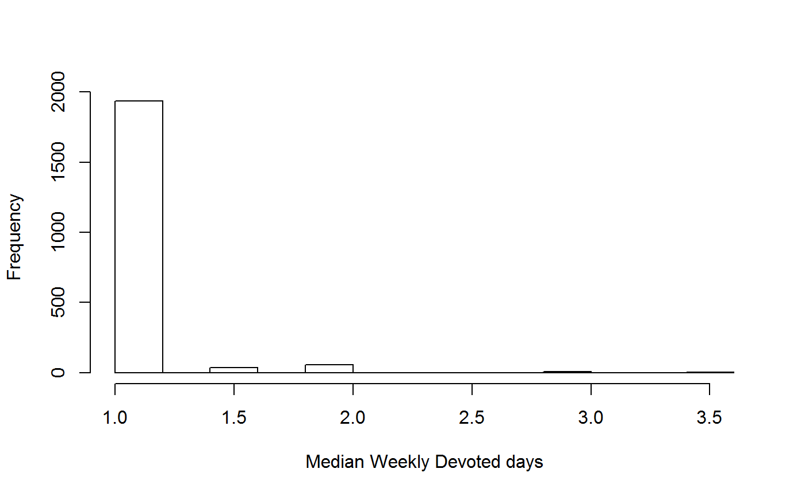

This R-package is for the analysis of recorder behaviour in citizen science projects. This package takes data from citizen science projects that have ‘what’ (typically species), ‘where’, ‘when’, and ‘who’ fields. From this data the various functions in this package create metrics that quantify the behaviour of the participants (the ‘who’).
This package accompanies the paper Data-derived metrics describing the behaviour of field-based citizen scientists provide insights for project design and modelling bias by TA August et al in press 2019
# Install the dependencies
install.packages(c('adehabitatHR',
'raster',
'sp',
'rgdal'))
devtools::install_github('biologicalrecordscentre/recorderMetrics')This R package is designed for organisers of citizen science projects and academics interested in the ‘citizen’ element of citizen science. Specifically this package is designed for wildlife recording citizen science projects where observers are allowed to record what, where and when, they want. However, elements of the package are still useful if this is not the case. The metrics presented here allow organisers to gain new insights in the variation in recorder behaviour. The insights will help organisers to decide which citizen scientists might be interested in a new project, or what sort of project will best fit with the patterns of behaviours in the citizen scientists.
The data needed is what, where, when, who. What was recorded (e.g. species), where was it recorded (i.e. latitude and longitude AND the grid square this falls in), when was it recorded (e.g. 20/01/1997), and who recorded it (e.g. ‘John Smith’ or ‘USER1548785’).
## recorder species date long lat km_sq
## 82138 11652 1 2017-08-19 -2.4872953 51.31455 ST6657
## 150797 3007 52 2014-06-12 -2.2452737 50.62048 SY8280
## 80713 22725 43 2015-07-05 -1.9939669 50.64902 SZ0083
## 161905 22725 26 2017-04-18 -2.4787477 50.81198 ST6601
## 217 1417 2 2017-03-31 -1.3645562 53.51558 SE4202
## 134124 26865 56 2017-08-05 -0.1137257 50.90479 TQ3213## 'data.frame': 10000 obs. of 6 variables:
## $ recorder: int 11652 3007 22725 22725 1417 26865 49583 31176 42818 10935 ...
## $ species : num 1 52 43 26 2 56 14 45 4 62 ...
## $ date : Date, format: "2017-08-19" "2014-06-12" ...
## $ long : num -2.49 -2.25 -1.99 -2.48 -1.36 ...
## $ lat : num 51.3 50.6 50.6 50.8 53.5 ...
## $ km_sq : chr "ST6657" "SY8280" "SZ0083" "ST6601" ...In the case of the example the recorder column is an anonymised number, but you could also use the users name (e.g. ‘John Smith’) as long as this uniquely identifies your user. If you usernames vary (e.g. ‘John Smith’, ‘J Smith’, ‘John A Smith’, ‘JA Smith’) you will need to harmonise these first. The same applies for species, numerics are used here but you could have Latin binomials as long a they uniquely identify a species. Note that location is given in latitude and longitude as well as 1km grid square. If you don’t have 1km square information you could use the name of the site or a concatenation of latitude and longitude, rounded to a fewer decimal places. Either way this location should be the same for all records submitted by a recorder on an individual visit. For comparability to August et al it should be a 1km square grid cell.
The four axes presented in August et al may not be the most appropriate axes for all citizen science projects however if you wish to use them this can be done using the predictAxes function. This function is a wrapper for a lot of other functions that we will explore in a moment.
#Run for 10 recorders
metrics_axes <- predictAxes(data = cit_sci_data,
recorders = unique(cit_sci_data$recorder)[1:10])## Warning in predictAxes(data = cit_sci_data, recorders =
## unique(cit_sci_data$recorder)[1:10]): Metrics cannot be calculated
## for recorders with fewer than the threshold number of active days. The
## threshold is set to 10 and 2 recorders fail this## 'data.frame': 10 obs. of 12 variables:
## $ recorder : int 11652 3007 22725 1417 26865 49583 31176 42818 10935 10488
## $ activity_ratio : num 1 0.107 0.256 0.209 0.207 ...
## $ active_days : int 1 49 114 18 62 11 11 11 1 76
## $ median_weekly_devoted_days: num NA 1 1 1 1 1 1 1 NA 1
## $ periodicity : num NA 9 3 4 3 9 12 20 NA 5
## $ periodicity_variation : num NA 9.43 4.33 3.95 8.46 ...
## $ upper_area : num NA 3608 7961 729 1804 ...
## $ upper_n_poly : int NA 5 13 2 4 1 1 1 NA 18
## $ ratio : num NA 0.185 0.186 0.237 0.14 ...
## $ taxa_prop : num NA 0.312 0.594 0.141 0.344 ...
## $ median_diff_rarity : num NA -0.826 7.438 0 -1.653 ...
## $ p1 : num NA 0.984 0.816 0.9 0.853 ...## recorder recording_intensity spatial_extent recording_potential
## 95 3007 -0.7264398 1.6086909 -0.9654431
## 951 22725 1.1652711 2.9220979 1.6412431
## 952 1417 0.8899649 -0.7295146 -1.6363167
## 953 26865 0.5633719 1.3143094 -0.5077554
## 954 49583 -1.3381062 -2.0257823 -2.0829712
## 955 31176 -2.2802431 -2.1251578 -1.1265838
## rarity_recording
## 95 0.8602738
## 951 1.7984001
## 952 0.7576400
## 953 0.4051430
## 954 -0.1435788
## 955 0.8211310# Run the metric all recorders. NOTE: this takes a long time
# metrics_axes <- predictAxes(data = cit_sci_data)Note that recorder metrics are only calculated for recorders with 10 or more active days as below that the metrics cannot be estimated with confidence.
The function we just looked at (predictAxes) calculates all of the metrics as well as the axes so you can use that to quickly calculate the metrics, however that function makes use of a number of other functions which calculate the metrics. If you want to have more control over the parameters used to calculate the metrics then these functions will give you that level of control.
summerData
Recorder metrics can be biased if there are annual breaks in data collection. In these cases it is better to ensure that only data in the recording period (typically summer), is included. This function is an objective way to identify this recording period.
# Subset this data to summer periods only
SD <- summerData(input_data = cit_sci_data,
probs = c(0.025, 0.975),
date_col = 'date')
head(SD)## recorder species date long lat km_sq Jday year
## 82138 11652 1 2017-08-19 -2.4872953 51.31455 ST6657 230 2017
## 150797 3007 52 2014-06-12 -2.2452737 50.62048 SY8280 162 2014
## 80713 22725 43 2015-07-05 -1.9939669 50.64902 SZ0083 185 2015
## 161905 22725 26 2017-04-18 -2.4787477 50.81198 ST6601 107 2017
## 217 1417 2 2017-03-31 -1.3645562 53.51558 SE4202 89 2017
## 134124 26865 56 2017-08-05 -0.1137257 50.90479 TQ3213 216 2017
## summer
## 82138 TRUE
## 150797 TRUE
## 80713 TRUE
## 161905 TRUE
## 217 TRUE
## 134124 TRUE## [1] 10000## [1] 9536## year quantile_first quantile_last
## 1 2014 102 275.000
## 2 2015 94 273.000
## 3 2016 92 278.000
## 4 2017 83 241.325activityRatio
This function takes in data for a recorder and calculates the activity ratio, total duration and number of active days.
# Get the summer period
SD <- summerData(cit_sci_data, date_col = 'date')
ar <- activityRatio(recorder_name = 3007,
data = cit_sci_data,
recorder_col = 'recorder',
date_col = 'date',
summer_days = attr(SD, 'cutoffs'))
# Run the metric for all recorders
ar_all <- lapply(unique(cit_sci_data$recorder),
FUN = activityRatio,
data = cit_sci_data,
recorder_col = 'recorder',
date_col = 'date',
summer_days = attr(SD, 'cutoffs'))
# summarise as one table
ar_all_sum <- do.call(rbind, ar_all)
head(ar_all_sum)## recorder activity_ratio total_duration summer_duration active_days
## 1 11652 1.00000000 1 1 1
## 2 3007 0.08045977 1236 696 56
## 3 22725 0.18409426 1223 679 125
## 4 1417 0.15833333 120 120 19
## 5 26865 0.13333333 867 510 68
## 6 49583 0.06043956 352 182 11
listLength
This function takes in data for a recorder and calculates the list length metrics. These metrics are based around the idea of a ‘list’, defined as the species recorded at a single location (often a 1km square) on a single day by an individual recorder.
# run for one recorder
LL <- listLength(data = cit_sci_data,
recorder_name = 3007,
threshold = 10,
plot = FALSE,
sp_col = 'species',
date_col = 'date',
recorder_col = 'recorder',
location_col = 'km_sq')
# Run the metric for all recorders
LL_all <- lapply(unique(cit_sci_data$recorder),
FUN = listLength,
data = cit_sci_data,
threshold = 10,
plot = FALSE,
sp_col = 'species',
date_col = 'date',
recorder_col = 'recorder',
location_col = 'km_sq')
# summarise as one table
LL_all_sum <- do.call(rbind, LL_all)
head(LL_all_sum)## recorder mean_LL median_LL variance p1 p4 n_lists
## 1 11652 NA NA NA NA NA 1
## 2 3007 1.015873 1 0.01587302 0.9841270 0.00000000 63
## 3 22725 1.226994 1 0.28766190 0.8159509 0.01226994 163
## 4 1417 1.100000 1 0.09473684 0.9000000 0.00000000 20
## 5 26865 1.186667 1 0.26198198 0.8533333 0.01333333 75
## 6 49583 1.090909 1 0.09090909 0.9090909 0.00000000 11hist(LL_all_sum$n_lists, breaks = 80, main = '',
xlab = 'Number of lists recorded by an individual recorder')
periodicity
This function takes in data for a recorder and calculates the periodicity metrics.
# run for one recorder
P <- periodicity(recorder_name = 3007,
data = cit_sci_data,
date_col = 'date',
recorder_col = 'recorder',
day_limit = 5)
# Run the metric for all recorders
P_all <- lapply(unique(cit_sci_data$recorder),
FUN = periodicity,
data = cit_sci_data,
date_col = 'date',
recorder_col = 'recorder',
day_limit = 5)
# summarise as one table
P_all_sum <- do.call(rbind, P_all)
head(P_all_sum)## recorder periodicity periodicity_variation median_streak sd_streak
## 1 11652 NA NA NA NA
## 2 3007 9.0 10.424964 1 0.2800560
## 3 22725 4.0 9.935425 1 0.6032567
## 4 1417 4.5 7.837608 1 0.5622957
## 5 26865 4.0 12.050814 1 0.8372419
## 6 49583 9.0 19.504985 1 0.5000000
## max_streak n_days
## 1 NA 1
## 2 3 56
## 3 5 125
## 4 3 19
## 5 4 68
## 6 2 11
spatialBehaviour
This function takes in data for a recorder and calculates the spatial metrics. Note that the spatial projection of the data allows for estimates of distance in meters. Pay particular attention to the specification of the parameters crs and new_crs
## get the proj4 strings from http://spatialreference.org
# current form is lat long
WGS_84 <- "+proj=longlat +ellps=WGS84 +datum=WGS84 +no_defs"
# I want to change to UK national grid as that is in meters
UKNG <- "+proj=tmerc +lat_0=49 +lon_0=-2 +k=0.9996012717 +x_0=400000 +y_0=-100000 +ellps=airy +datum=OSGB36 +units=m +no_defs"
SB <- spatialBehaviour(recorder_name = 3007,
data = cit_sci_data,
crs = WGS_84,
new_crs = UKNG,
y_col = 'lat',
x_col = 'long',
recorder_col = 'recorder')
# Plot the polygons that capture 95% of a recorders records
plot(SB$poly_upper)
# Run for more than one recorder, this can be slow
SB_all <- lapply(unique(cit_sci_data$recorder)[1:10],
FUN = spatialBehaviour,
data = cit_sci_data,
crs = WGS_84,
new_crs = UKNG,
y_col = 'lat',
x_col = 'long',
recorder_col = 'recorder')
# summarise as one table
SB_all_sum <- do.call(rbind, SB_all)
# This contains the polygons which I drop here
# so we can see the other results in a table
head(SB_all_sum)[,c(1,6:10)]## recorder lower_n_poly upper_area lower_area ratio n
## [1,] 11652 NA NA NA NA 1
## [2,] 3007 1 3608 668 0.1851441 64
## [3,] 22725 1 7961 1477 0.1855295 200
## [4,] 1417 1 729 173 0.2373114 22
## [5,] 26865 1 1804 252 0.1396896 89
## [6,] 49583 1 521 155 0.2975048 12speciesRarity
This function takes in data for a recorder and calculates the recorder’s rarity metrics.
# Run for a single recorder
SR <- speciesRarity(recorder_name = 3007,
data = cit_sci_data,
sp_col = 'species',
recorder_col = 'recorder')
# Run the metric for all recorders
SR_all <- lapply(unique(cit_sci_data$recorder),
FUN = speciesRarity,
data = cit_sci_data,
sp_col = 'species',
recorder_col = 'recorder')
# summarise as one table
SR_all_sum <- do.call(rbind, SR_all)
head(SR_all_sum)## recorder median_rarity median_diff_rarity stdev n
## 1 11652 4.958678 -8.2644628 NA 1
## 2 3007 12.396694 -0.8264463 12.832748 64
## 3 22725 20.661157 7.4380165 16.231958 200
## 4 1417 13.223140 0.0000000 9.988949 22
## 5 26865 11.570248 -1.6528926 14.935808 89
## 6 49583 7.438017 -5.7851240 9.459110 12
taxaBreadth
These metrics describe the ‘experience’ the recorder has had recording species within the group.
# Calculate the taxa breadth metrics for one recorder
TB <- taxaBreadth(recorder_name = 3007,
data = cit_sci_data,
sp_col = 'species',
recorder_col = 'recorder')
# Run for more than one recorder, this can be slow
TB_all <- lapply(unique(cit_sci_data$recorder),
FUN = taxaBreadth,
data = cit_sci_data,
sp_col = 'species',
recorder_col = 'recorder')
# summarise as one table
TB_all_sum <- do.call(rbind, TB_all)
head(TB_all_sum)## recorder taxa_breadth taxa_prop n
## 1 11652 1 0.015625 1
## 2 3007 20 0.312500 64
## 3 22725 38 0.593750 200
## 4 1417 9 0.140625 22
## 5 26865 22 0.343750 89
## 6 49583 9 0.140625 12
weeklyDevotedDays
These metrics describe frequency of recording in weeks in which the recorder made observations.
# Run for one recorder
WDD <- weeklyDevotedDays(recorder_name = 3007,
data = cit_sci_data,
recorder_col = 'recorder',
date_col = 'date')
# Run for more than one recorder, this can be slow
WDD_all <- lapply(unique(cit_sci_data$recorder),
FUN = weeklyDevotedDays,
data = cit_sci_data,
recorder_col = 'recorder',
date_col = 'date')
# summarise as one table
WDD_all_sum <- do.call(rbind, WDD_all)
head(WDD_all_sum)## recorder median_weekly_devoted_days n_weeks n_recs
## 1 11652 1 1 1
## 2 3007 1 48 56
## 3 22725 1 75 125
## 4 1417 1 13 19
## 5 26865 1 41 68
## 6 49583 1 10 11